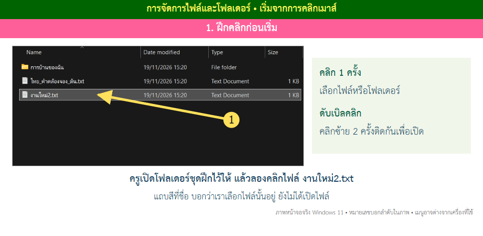

ห้องเรียนลงมือ · ป.5 · ฝึกทีละขั้น
ฝึกคลิก จัดไฟล์ให้หาเจอ

1 / 9ฝึกคลิกก่อนเริ่ม
ครูสาธิต → นักเรียนลองทำ → จึงเปิดขั้นต่อไป ใช้ปุ่มลูกศรเลื่อนสไลด์ หรือปัดซ้าย–ขวาบนจอสัมผัส

ครูสาธิต → นักเรียนลองทำ → จึงเปิดขั้นต่อไป ใช้ปุ่มลูกศรเลื่อนสไลด์ หรือปัดซ้าย–ขวาบนจอสัมผัส